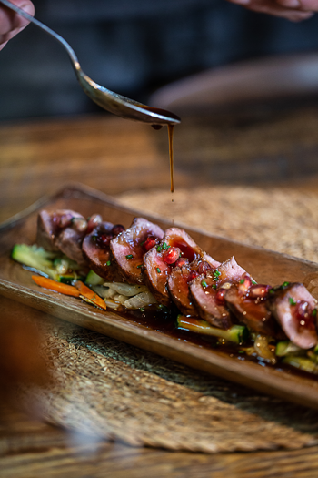
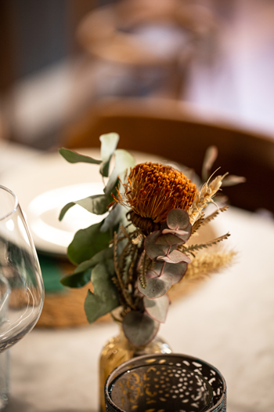

Home
Carta
Reserva
Take Away
bicos* es un montón de besos, es lo que das cuando entras y lo que dejas cuando te vas, es fusión, es sabor, es volver a tus raíces y es sentirte como en casa.


Carta
Nuestra Cocina
Reserva
Tu Mesa
Take away
Te lo llevamos a casa
936 11 27
Reserva Online
bicos* es un restaurante gallego de tradición contemporánea
Avenida Diagonal 287, Barcelona, 08013
936 11 27
info@bicosrestaurante.com
Horario:
Martes - Domingo:
13:00 - 15:45
Martes - Sábado:
19:30 - 23:00
Bicos
Recommended on
Restaurant Guru 2020
4.7
stars
based on
644
Google Reviews